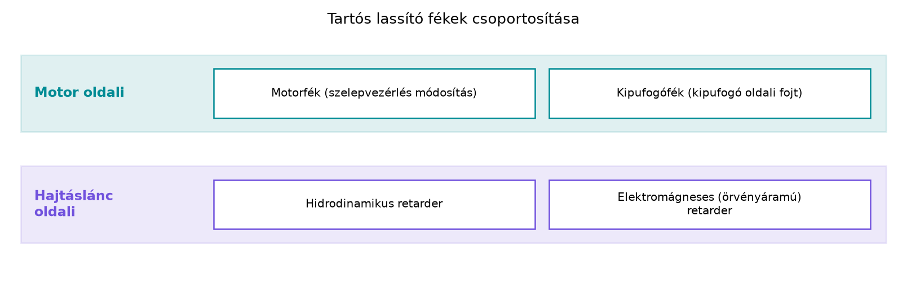

Kétféle műhelyhelyzetben találkozunk a rögzítőfékkel és a tartós lassítófékkel. Az egyik: a dombon parkoló jármű nem mozdul el a kézifék behúzása után, és a műszaki vizsgán a fékhatásmérőn is meg kell felelnie. A másik: egy hosszú lejtőn a szervizfék folyamatos használata túlmelegedést, a fékbetét és a fékfolyadék túlhevülését és hatáscsökkenést okozhat; ezért tehergépjárműveken és egyes haszongépjárműveken tartós lassító fékre van szükség. Szerelőként tudnunk kell, hogyan működik a mechanikus bowdenes rögzítőfék, hogyan kell az elektromechanikus rögzítőféket (EPB) szervizelni a betétcsere előtt, és hogyan működnek a tartós lassító fékek. Ezek az ismeretek a Fékjavítás: betét, tárcsa, dob, nyereg, légtelenítés, ABS és EPB alfejezetben közvetlenül hasznosulnak.
Képzeljünk el egy hátsó dobféket. A fékdob belső felületéhez két fékpofa szorul a fékhenger hatására. A pofák alsó vége egy csapon támaszkodik, felső végüket a fékhenger feszíti szét. A kézifékbowden egy emelőkart mozgat, amely a pofákat önállóan – hidraulika nélkül – feszíti a dobhoz. Egy másik kép: elektromechanikus rögzítőfék esetén a hátsó féknyeregre szerelt villanymotor fogaskerekes hajtóművön keresztül egy nagy áttételű csavart forgat; a csavar a fék dugattyúját előre tolja, és a betétet a tárcsához szorítja. A motor áramfelvételéből az elektronika felismeri, mikor érte el a megfelelő szorítóerőt.
Definíció. A rögzítőfék (parkolófék; „kézifék”) a jármű álló helyzetben tartására szolgáló, a szervizfékrendszertől függetlenül működtethető fékberendezés. Személygépkocsikon jellemzően a hátsó kerekekre hat, mechanikus (bowden, rúd, kábel) vagy elektromechanikus (EPB) kivitelben.
Definíció. A tartós lassító fék (retarder, lassítóberendezés) olyan, a kerékféktől független rendszer, amely hosszabb lejtőkön folyamatos lassítónyomatékot biztosít anélkül, hogy a kerékfékek tartósan üzemelnének. Energiáját a hajtásláncban, a motorban vagy a kipufogórendszerben alakítja hővé.
Megjegyzés. A rögzítőfék feladata tartás, a tartós lassító féké pedig hosszú tartamú lassítás. A kettő nem helyettesíti egymást.
Dobféknél a kézifékkarhoz bowden (vagy rúd) csatlakozik. A bowden belső huzala a fékpajzson belüli emelőkarhoz kapcsolódik. A kar elfordulása a fékpofákat szétfeszíti a dobon. A rugók a kart és a pofákat oldás után visszahúzzák. A fékpofák kopása miatt a szerkezet utánállítást igényel; egyes dobfékek automatikus utánállítóval rendelkeznek, másokon a bowden hossza kézzel állítható. Tárcsaféknél több megoldás létezik: (1) a tárcsafék dobjában egy kis dobfék-pár, (2) a féknyeregbe épített mechanikus csavaros működtető, amely a dugattyút tolja a betéthez, vagy (3) EPB. A bowdenes rögzítőféknél a kar és a kábel mozgását, a pofák/dobok kopását, a beállítást rendszeresen ellenőrizni kell.
A kilincsműves kar (1) a húzórúdon (2) át a kiegyenlítőt (3) húzza, amely a két bowden (5) között kiegyenlíti az erőt; a bowdenek feszességét a kiegyenlítőnél lévő állítóanyával és ellenanyával (4) állítjuk. A bowden a dobféknél a pofák feszítőkarját (6a), tárcsaféknél a nyeregbe épített mechanikus kart (6b) húzza; egyes járműveken a tárcsa agyrészében külön kis dobfék (6c) a rögzítőfék. A túl feszes beállításnál a fék oldott karnál is súrol, a túl lazánál sok kilincsfog kell, és a fék nem tart. A HTML-kiadásban a kar fogankénti behúzása lépésenként követhető.
Az EPB (electric parking brake) a hagyományos kézifékkar vagy pedál helyett kapcsolóval működik. Egy tipikus rendszer elemei: kapcsoló (pl. „P” gomb a középkonzolon), EPB-vezérlő, hátsó féknyeregre szerelt villanymotor hajtóművel, és a kapcsolódó fékfigyelmeztető lámpa. A vezérlő a gomb megnyomásakor feszültséget kapcsol a motorra; a hajtómű (pl. nagyfokozatú csavarkerék) a dugattyút előre tolja. A szorítóerő nagyságát az ECU a motor áramfelvételének emelkedéséből érzékeli, és a kívánt szinten leállítja a motort. Oldáskor a motor ellentétes irányban forgatja a csavart, a dugattyú visszahúzódik.
Az EPB vészkioldása akkor szükséges, ha a 12 V-os rendszer vagy a fékvezérlő nem működik, és a járművet szállítani vagy szerelni kell. A gyártók többféle megoldást használnak: egyes járművekben a csomagtérben található mechanikus vészoldó bowden vagy vészkioldó hurok, más járműveknél diagnosztikai műszerrel indítható vészkioldás. A pontos eljárást a gyártói javítási utasítás tartalmazza (ellenőrizendő: típusonként). Tilos a dugattyút erővel benyomni vagy a motort a gyártói eljárástól eltérően (például közvetlen tápfeszültséggel) működtetni, mert a csavarorsó és a hajtómű károsodhat.
A szerviz üzemmód (service mode, maintenance mode) az EPB továbbfejlesztett diagnosztikai funkciója. A betétcsere előtt a rendszert diagnosztikai műszerrel vagy egy gombsorozattal úgy állítják be, hogy a dugattyú teljesen visszahúzódjon, és a fékbetétek szabadon cserélhetők legyenek. Ezután az új betétek beszerelése után az EPB-t újra be kell tanítani, illetve a szerviz üzemmódból ki kell lépni, és a működést tesztelni kell. A részleteket a gyártói előírás adja (ellenőrizendő).
A villanymotor (1) a hajtóművön (2) át az önzáró csavarorsót (3) forgatja; az orsóanya (4) a dugattyút (5) és a betéteket (6) a tárcsához (7) tolja. A motoráram az indulási csúcs után kicsi, a betétek felfekvésekor meredeken nő, és a vezérlő a lekapcsolási küszöbnél leállítja a motort. Mivel az orsó önzáró, a dugattyút tengelyirányú erővel nem lehet visszanyomni: előbb a szerviz üzemmódban az orsót kell visszaforgatni. A HTML-kiadás lépései a behúzást, a szorítást, az oldást, a szerviz üzemmódot és a tilos „erővel benyomás” esetét mutatják.
A tartós lassító fékek célja a kerékfékek tehermentesítése hosszú lejtőkön. Négy fő típus terjedt el:
1. Motorfék. A dízelmotorban a kipufogószelep vezérlésének módosításával a sűrítési ütemben a levegőt összesűrítik, majd kipufogószelepeket nyitnak, így a motornak nincs hasznos munkavégzése, és a motor belső súrlódása, kompressziója fékezőnyomatékot ad. A benzines Otto-motoroknál is van motorfékhatás, ha a gázpedált felengedjük: ezt főként a zárt fojtószelep miatti szívási (töltéscsere-) veszteség adja. A motorfék használatakor a fordulatszámot a gyártó által megengedett tartományban kell tartani, kerülni kell a túlfordulatot (ellenőrizendő: fordulatszám-határ).
2. Kipufogófék. A kipufogócsőbe épített fojtószelep (pillangószelep) csökkenti a kipufogógáz távozását. A motor a kipufogási ütemben a megnövekedett ellennyomás ellen dolgozik, így a fékezőhatás nő. Jellemzően a motorkontrollal együtt alkalmazzák; használata közben az automatikus sebességváltót megfelelő fokozatba kell kapcsolni.
3. Hidrodinamikus retarder. A hajtásláncba (pl. sebességváltó után, kardántengelyben vagy a sebességváltóval egybeépítve) szerelt folyadékcsatoló. A forgórész és az állórész közé olajat töltenek; a forgórész a hajtásból származó energiát a folyadék cirkulációján keresztül átadja az állórésznek, ahol hővé alakul. A féknyomaték az olajtöltés mértékével szabályozható. A keletkező hőt a jármű hűtőrendszere viszi el, ezért a retardert csak megfelelő hűtőfolyadék-szinttel szabad tartósan használni.
4. Elektromágneses (örvényáramú) retarder. A forgórészt (tárcsa vagy dob) a hajtáslánc hajtja. Az állórész mágneses teret hoz létre; a forgó vezető tárcsában örvényáramok indukálódnak, amelyek fékezőnyomatékot keltenek. A nyomaték a gerjesztőárammal szabályozható, a hőt a levegő vagy folyadékhűtés adja le. Ez a rendszer kopásmentes, villamos energiát igényel, és a jármű 24 V-os hálózatához kapcsolódik.
Az alábbi rétegábra a tartós lassító fékek fő csoportjait foglalja össze:

Regeneratív fékezés – a hibrid és elektromos járműveknél a húzómotor generátoros üzemmódban lassít, és a mozgási energiát az akkumulátorba tölti. Ez is tartós fékezésként szolgál, de részletesen a Hibrid és elektromos hajtások áttekintése alfejezetben tárgyaljuk.
1. Példa – rögzítőfék tartóereje lejtőn.
Egy 1500 kg össztömegű személyautó 20%-os lejtőn áll. Mennyi fékerőt
kell a rögzítőféknek a jármű elmozdulásának megakadályozásához?
(pontosan: → 2886 N; a közelítés hibája kb. 2%).
Ez a teljes járműre ható lejtőirányú erő; a rögzítőféknek ezt kell tartania a hátsó kerekeken, ezért a hátsó tengelyre jutó tapadási erőt is figyelembe kell venni. A hatósági vizsgán a rögzítőfék-hatásosságot a jármű tömegéhez viszonyított lassulásban vagy fékerőben mérik (ellenőrizendő: hatályos műszaki vizsga követelmény).
2. Példa – hidrodinamikus retarder
teljesítménylevezetése.
Egy 40 t össztömegű tehergépkocsi 6%-os lejtőn 60 km/h állandó
sebességgel halad, a lejtőn a gördülési ellenállás elhanyagolható.
Mekkora teljesítményt kell a tartós lassító fékkel felemészteni?
A sebesség:
.
A lejtő ellenállási ereje:
.
A teljesítmény:
.
Ez nagy teljesítmény, jól mutatja, miért van szükség a kerékféktől független, nagy hőleadású tartós lassító féke. A konkrét érték a hajtáslánc hatásfokától és a gördülési ellenállástól is függ; ez tanulási példa.
A rögzítőféket és a tartós lassító fékeket a következőképp ellenőrizzük:
Egy személyautó ügyfele panaszkodik: az EPB piros figyelmeztető lámpája világít, a rögzítőfék nem old ki. A diagnosztikai műszerrel kiolvassuk az EPB hibakódot: a jobb hátsó szervomotor nem jelez áramfelvételt. Ellenőrizzük a csatlakozókat, a vezetékeket feszültségesésmérővel; a motor ellenállása szakadt. A féknyeregbe épített szervomotor cseréje szükséges. Mielőtt bontunk, a jármű kerekeit kiékeljük, és a befeszült jobb hátsó nyerget a gyártói vészkioldási eljárással oldjuk (ellenőrizendő). A jobb oldali nyereg cseréje után az új egységet betanítjuk, a rendszert működtetjük, és a hibakódot csak a javítás után töröljük. Végül lejtőn próbáljuk a rögzítőféket. Tanulság: az EPB-vel ellátott féknyeregen a dugattyút tilos erővel benyomni, mindig szerviz üzemmódot kell használni.
Biztonsági korlát. A feladat tanműhelyi környezetre, oktató felügyeletére és a gyártói javítási utasítás betartására vonatkozik; a megadott értékek tanulási példák.
Figyelem. Az EPB-vel szerelt járműveken a hátsó féknyereg dugattyúját tilos erővel benyomni, mert a hajtómű és a csavarorsó károsodik. Mindig a gyártó által előírt szerviz üzemmódot használja. (Az ok: az önzáró csavarorsó, lásd az EPB-nyereg metszetét az Elektromechanikus rögzítőfék szakaszban.)
Szükséges eszközök: emelő/bakra, kerékőrök, szerszámkészlet, diagnosztikai műszer, fékpiszok eltávolítására kefe és fékportisztító (ha szükséges), egyéni védőfelszerelés, gyűjtőedény.
Lépések:
1. feladat (A). Milyen feladatai vannak a rögzítőféknek és a tartós lassító féknek? Fogalmazza meg a különbséget.
2. feladat (A). Számítsa ki az 1. kidolgozott példa mintájára: egy 2500 kg-os jármű 15%-os lejtőn parkol. Mekkora a lejtőirányú erő?
3. feladat (B). Írja le az EPB szerviz üzemmód aktiválásának fő lépéseit (legalább öt lépés), és magyarázza el, miért kötelező a diagnosztikai műszer használata.
4. feladat (B). Hasonlítsa össze a hidrodinamikus retardert és az elektromágneses (örvényáramú) retardert: működési elv, beavatkozás, hőelvezetés, előnyök és hátrányok.
5. feladat (C). Mi történik, ha a bowdenes kéziféket túl feszesre állítják? Milyen következményei lehetnek a járműre és a fékekre?
6. feladat (D). Egy ügyfél panasza: a járműben az EPB gomb megnyomásakor a rögzítőfék nem old ki, a piros lámpa villog. A diagnosztikai műszer hibakódot jelez a jobb hátsó szervomotorra. Milyen lépésekkel állítja fel a diagnózist, és milyen javítást javasol? Írja le a hibakeresés és a javítás gondolatmenetét.
Önellenőrzés – válaszok
1. feladat megoldása.
A rögzítőfék a jármű álló helyzetben tartására, a tartós lassító fék a
folyamatos lassításra szolgál hosszú lejtőkön. A rögzítőfék tipikusan a
hátsó kerekekre hat, míg a tartós lassító fék a motorban, a kipufogóban
vagy a hajtásláncban fejti ki hatását.
2. feladat megoldása.
Adott:
,
,
.
Keresett:
.
.
Ellenőrzés: a lejtő enyhébb (15% < 20%), de a tömeg jóval nagyobb,
így összességében nagyobb erőt kapunk.
3. feladat megoldása.
A lépések (lásd a gyakorlati útmutatót): biztonságos járműrögzítés,
gyújtás kikapcsolása, diagnosztikai műszer csatlakoztatása, szerviz
üzemmód aktiválása, a dugattyú visszahúzódásának ellenőrzése,
betétcsere, kilépés a szerviz üzemmódból, EPB-tanítás, teszt. A
diagnosztikai műszer azért kötelező, mert a szerviz üzemmódot ez
aktiválja, és megakadályozza a dugattyú erőltetett benyomását; ezen
kívül a hibakódok törléséhez is szükséges.
4. feladat megoldása.
A hidrodinamikus retarder folyadékot (olajat) használ a forgó és
állórész között; a nyomaték az olaj mennyiségével szabályozható, a hőt a
jármű hűtőrendszere viszi el. Az örvényáramú retarder mágneses teret
használ, a forgó tárcsában indukált örvényáramok keltenek féket; a
nyomaték a gerjesztőárammal szabályozható, a hőt levegő vagy folyadék
hűtés adja le. Mindkettő kopásmentes, de az elektromágneses rendszer
villamos energiát igényel. A hidrodinamikus egyszerűbb mechanikailag, de
olajszint és hőcserélő ellenőrzése szükséges.
5. feladat megoldása.
A túlfeszített bowden a fékpofákat folyamatosan a dobhoz vagy a
tárcsához szorítja. Ez állandó súrlódást, melegedést, a fékbetétek idő
előtti kopását, nagyobb üzemanyag-fogyasztást, és akár a fék
túlmelegedését okozhatja. A jármű akadályozott szabadgurulású, ami a
vizsgán is látható. A helyes beállítás: a kar játékának gyártói értékre
állítása, a pofák utánállítása.
6. feladat megoldása.
Először rögzítse a járművet (kerekek kiékelése), győződjön meg róla,
hogy a fék oldott állapotban van-e mechanikusan. Csatlakoztassa a
diagnosztikai műszert, olvassa ki az EPB hibakódjait. Ellenőrizze a jobb
hátsó szervomotor táplálását és testelését: a feszültségmérés bekapcsolt
gyújtás mellett, a működtetés közben történik (feszültség a motor
csatlakozóján, a motor ellenállása). Ha a motor szakadt vagy nem vesz
fel áramot, a féknyeregbe épített szervomotor cseréje szükséges. A bal
oldali nyerget szerviz üzemmódban húzza vissza, a jobb nyereg cseréje
után végezze el az EPB-tanítást, a működtetési tesztet, hibakód törlést,
és lejtőn tesztelje a rögzítőféket. Fontos: a szerelés (motor/nyereg
cseréje) előtt kapcsolja ki a gyújtást, és – ha a gyártó előírja – kösse
le az akkumulátort (ellenőrizendő).
A rögzítőfék a jármű álló helyzetben tartására szolgál. A mechanikus bowdenes megoldás a hátsó dobféket vagy tárcsaféket működteti, beállítását a kar útja és a pofák hézaga határozza meg. Az elektromechanikus rögzítőfék (EPB) villanymotoros csavarorsóval szorítja a betétet a tárcsára; betétcsere előtt a dugattyút csak szerviz üzemmódban szabad visszahúzni, erővel benyomni tilos. Vészkioldás a gyártói eljárás szerint történik. A tartós lassító fékek a kerékfékek tehermentesítésére szolgálnak: a motorfék a szelepvezérlés módosításával, a kipufogófék a kipufogóellennyomás növelésével, a hidrodinamikus retarder olajfeltöltésű folyadékcsatolóval, az elektromágneses retarder örvényárammal fejti ki a hatását. A regeneratív fékezést a hibrid és elektromos járműveknél tárgyaljuk (VIII. rész). Továbbvitt eredmény. Az EPB szerviz üzemmódjának ismeretét a Fékjavítás: betét, tárcsa, dob, nyereg, légtelenítés, ABS és EPB alfejezetben közvetlenül alkalmazzuk a hátsó fékbetét-csere során.